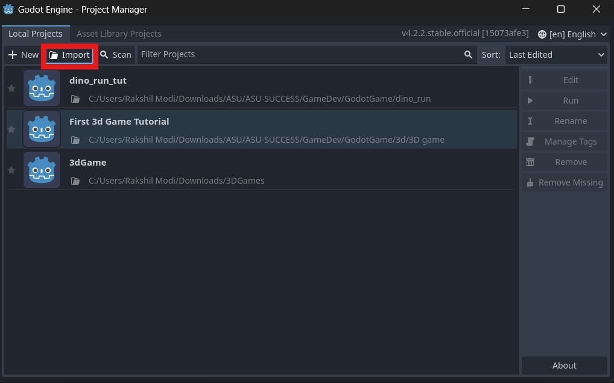

-
Open
Godot_v4.2.2-stable_win64from Godot_v4.2.2-stable_win64.exe folder - Click on import 
-
Enter the following path in the dialog box:
/Users/Downloads/ASU-SUCCESS/GameDev/GodotGame/dino_runand click onSelect Current Folderbutton below. -
Click on
Import and Editand then open the project by click on3D game. - Now the next step is to test and run the game to make sure everything is working fine. Click on the play button.